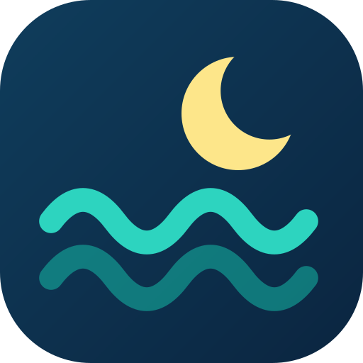

بدر
26
أكتوبر
أقوى مد في الشهر 🌊
الشمس والأرض والقمر
على خط واحد
مد أعلى، وجزر أخفض
= المد الربيعي
الفرق بين المد والجزر
يصل إلى
4
م
الكويت
0.00
م
أم قصر
0.00
م
الدار البيضاء
0.00
م
أفضل أيام الصيد 🎣
25–28
أكتوبر
في معظم الموانئ العربية

ArabTides
ابحث عن ميناءك
arabtides.com